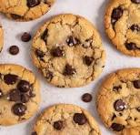

This recipe is a classic, and it's easier to make than you may have thought.
Follow the steps below, and use the ingredients from the provided list, and you'll be in cookie heaven in no time!
Link to Recipe
Ingredients
1 cup (2 sticks) unsalted butter, softened
3/4 cup granulated sugar
3/4 cup packed brown sugar
1 teaspoon vanilla extract
2 large eggs
2 1/4 cups all-purpose flour
1 teaspoon baking soda
1/2 teaspoon salt
2 cups semisweet chocolate chips
1 cup chopped nuts (optional)
Steps
Preheat the oven to 375°F (190°C).
Line baking sheets with parchment paper or silicone baking mats.
In a large mixing bowl, cream together the softened butter, granulated sugar, brown sugar, and vanilla extract until light and fluffy.
Add the eggs, one at a time, beating well after each addition.
In a separate bowl, whisk together the flour, baking soda, and salt.
Gradually add the dry ingredients to the wet ingredients, mixing until just combined.
Stir in the chocolate chips and chopped nuts (if using) until evenly distributed throughout the dough.
Drop rounded tablespoons of dough onto the prepared baking sheets, spacing them about 2 inches apart.
Bake in the preheated oven for 9 to 11 minutes, or until the edges are golden brown.
Remove from the oven and allow the cookies to cool on the baking sheets for a few minutes before transferring them to wire racks to cool completely.

Want to add your own recipe? Click the button to add to our cookie book: